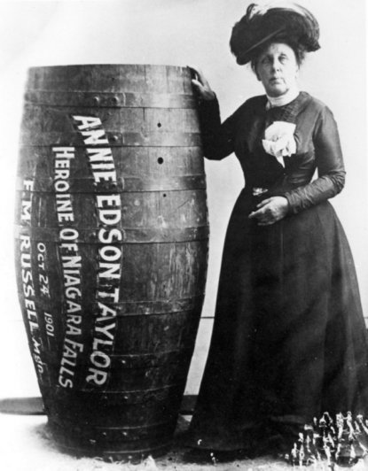

Ekaterinburg,

Melbourne Cup: Star jockey Michelle Payne fit again after horror fall
'You have to take the good with the bad'
But much like her life -- laid bare so honestly in her autobiography "Life As I Know It" -- the fairytale, as she calls it, has been punctuated by massive pitfalls, most recently being replaced as the jockey of last year's winner Prince of Penzance.
For the 31-year-old, there have been a lot of highs since that famous win, but for all her effervescent personality -- her "get stuffed" reaction to her victory has gone down in horse racing folklore -- being in the spotlight has not always been a pleasant experience.
And she may still get a chance to ride in the "race that stops a nation." Australia's Daily Telegraph recently reported that her run of good of form could see her given a chance on the Sheikh Mohammed bin Rashid Al Maktoum-owned horse Qewy.
"The hardest part has been the stress in my life but you have to take the good with the bad," she says. Life after winning the Life after winning the 'race that stops a nation' 09:03 At times, she finds the interviews hard, pausing for reflection to explain why before saying: "I think that looking back about things really wears me out."
Her life to date has been sufficiently captivating for a movie to be made by the Oscar-nominated actress and director Rachel Griffiths. "As you can imagine, it's quite surreal so I try not to think about it. I try not to get too involved -- although they'll tell me who they've got in mind to play me -- and hopefully they do a great job. The female jockey blazing a trail The female jockey blazing a trail 03:12 "But it's crazy. My hero's Roger Federer and they're not making a movie about him but they are about me." A clear high of the past year has been to meet her idol, whose first words regarding her Melbourne Cup triumph were simply "well done."
Meeting her idol
"It's something I take pretty seriously as I know that I looked up to other people for inspiration," she says. "So if I can inspire people then that makes me happy. "I had one girl come up to me. She must have been 20 or 21, and she told me she was about to drop out of university but that I inspired her to keep going. I love that." While she continues to be an inspiration, there are those in her own family that wish she hadn't returned to the saddle.
Her sisters tried to persuade her to call time on her riding career, and at times she was 50-50 whether to return. But that return has been vindicated by her first comeback win in the Coleraine Cup. "The fall was the worst week of my life," she admits. "The pain was just incredible, such a shock. I got trodden on with my horse at full gallop and the pain was so much I had to double up on painkillers. "I ended up hallucinating and then had to have an epidural that didn't work, and there were tubes coming out of everywhere. It was a nightmare. I didn't think poor me, I just wanted to survive and by day three or four I didn't think I could go on."
Experts uncover hidden layers of Jesus' tomb site.
In the innermost chamber of the site said to be the tomb of Jesus, a restoration team has peeled away a marble layer for the first time in centuries in an effort to reach what it believes is the original rock surface where Jesus' body was laid.
Many historians have long believed that the original cave, identified a few centuries after Jesus' death as his tomb, was obliterated ages ago.
But an archaeologist accompanying the restoration team said ground penetrating radar tests determined that cave walls are in fact standing — at a height of six feet and connected to bedrock — behind the marbled panels of the chamber at the center of Jerusalem's Church of the Holy Sepulchre.
What was found
, said National Geographic archaeologist Fredrik Hiebert,
is astonishing
.
The work is part of a historic renovation project to reinforce and preserve the Edicule, the chamber housing the cave where Jesus was entombed and resurrected. It is the centerpiece of one of Christianity's oldest churches and one of its most important shrines.
National Geographic is partnering with Greek restoration experts to document the work.
A 12th-century building sitting on 4th-century remains, the Church of the Holy Sepluchre is the only place where six Christian denominations practice their faith at the same site. The Edicule was last restored in 1810 following a fire, and is in need of reinforcement after years of exposure to humidity and candle smoke. A hulking iron cage built around the Edicule by British authorities in 1947 for support still stands, but is not enough. Renovations at this holiest of spots require mutual agreement by the church's various custodians, and that is notoriously hard to secure. The denominations jealously guard different parts of the site and often object to even the slightest of changes.
Last year, Israeli police briefly shut down the building after Israel's Antiquities Authority deemed it unsafe. It prompted the Christian denominations to green light the repairs, which began in June. Pilgrims line up throughout the day for the chance to crouch in the Edicule's tiny room. They kneel before a white marble encasing, said to cover a surface hewn from the side of the limestone cave where Jesus' body was laid before his resurrection. Church officials closed the Edicule to pilgrims beginning Wednesday evening, and workers used a pulley to slide open the marble slab, in hopes of reaching the burial surface. Hiebert said the slab hadn't been removed since the year 1550.
Donald Trump Dismisses Michelle Obama's Barbs as Part of 'the Game'
Michelle Obama continued her criticisms of Donald Trump today in her first joint campaign appearance with Hillary Clinton, but the Republican presidential nominee appears to be unfazed by such attacks. "Look, what is she going to say? Is she going to say I'm fantastic?" Trump asked ABC News' George Stephanopoulos. "Is she going to say, 'Trump is better at that than any other human being in the world,' OK, which I believe I am," he said.
Obama has been one of Clinton's most vocal surrogates in recent weeks, giving a number of well-received speeches on the former secretary of state's behalf but never mentioning Trump by name. But the target of the first lady’s criticism is obvious, including her remarks about the "hurtful, deceitful" birther theory that Trump popularized and his "locker-room talk" defense for a 2005 recording on which he apparently boasts of groping women without their consent.
"If a candidate is erratic and threatening, if a candidate traffics in prejudice, fear and lies on the campaign trail, if a candidate thinks that not paying taxes makes you smart or that it's good business when people lose their homes, if a candidate regularly and flippantly makes cruel and insulting comments about women -- about how we look, how we act -- well, sadly, that's who that candidate really is," Obama said in one of her earlier campaign speeches in Pennsylvania.
What is better: apples or oranges?
Twitter Axing 9 Percent of Workforce
Twitter announced this morning that it is letting go of 9 percent of its workforce, as the company reported uninspiring earnings. Speculation has been rife in recent weeks that a number of companies were considering buying the flagging social media company. The company's shares were up in early trading.
Twitter announced this morning that it is letting go of 9 percent of its workforce, as the company reported uninspiring earnings. Speculation has been rife in recent weeks that a number of companies were considering buying the flagging social media company. The company's shares were up in early trading. The cuts focus "primarily on reorganizing the company’s sales, partnerships, and marketing efforts, is intended to create greater focus and efficiency to enable Twitter’s goal of driving toward [standard accounting] profitability in 2017,” the company said in a statement.
Three Xi’an officials detained after stuffing cotton into air quality monitor to alter data
Three Xi’an officials have been detained by police after it was found that an air quality monitoring station sampling unit in Central China had been stuffed with cotton material in an effort to cheat the sensors.
An official at the Chang’an branch of the Xi’an Environmental Protection Bureau reportedly made a copy of the key to the monitoring station and memorised the passcode to the restricted area, reported Xi’an newspaper Huashangbao. Staff then repeatedly snuck into the station to stuff cotton into the sampling unit.
Air quality monitors typically draw in air then measure the amount of particles present. A source familiar with the matter told the newspaper that stuffing cotton material into the sampling unit would act as an air filter.
The China National Environmental Monitoring Center (CNEMC), which is overseen by the Ministry of Environmental Protection, noticed the change in the data. Following an investigation by the police, those suspected to be involved were detained by police, reported The Paper.
Three officials at the branch were taken by police and another is on leave, it reported.
China’s vice minister of environmental protection announced a two-year inspection campaign to root out fake air quality data in April 2015. At the time, the minister accused some local governments of fabricating or tampering with air quality data and told national news agency Xinhua that monitoring stations affiliated with the ministry would help cross check data from other stations. The Chang’an monitoring station was one of the two stations in the city that directly fed data to the CNEMC, according to the local paper’s source. The Chang’an branch of the Xi’an Environmental Protection Bureau has not yet responded to HKFP’s request for comment.